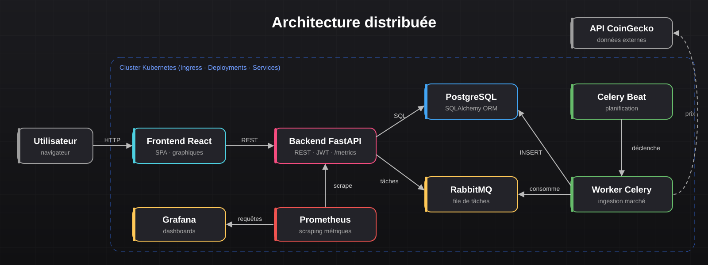
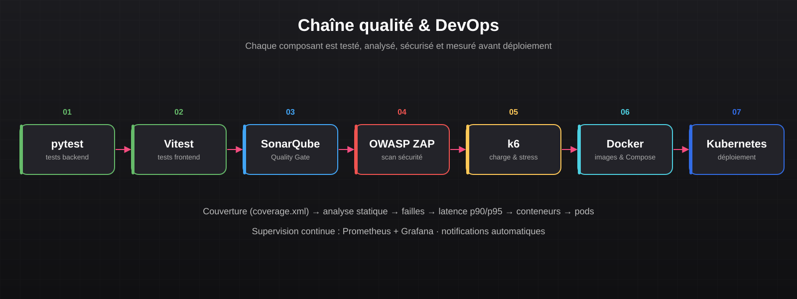

Documentation Technique
cryptoMania — API FastAPI, traitement asynchrone, observabilité et Kubernetes
Sommaire
Objectif du projet
Concevoir une plateforme de simulation de trading de cryptomonnaies robuste et observable : les utilisateurs gèrent un wallet virtuel, passent des ordres fictifs et suivent la performance de leur portefeuille, tandis que les cours sont mis à jour en continu en arrière-plan.
L'enjeu technique principal est de construire une architecture découplée, scalable et supervisée, conforme aux pratiques DevOps.
Technologies utilisées
| Domaine | Technologies |
|---|---|
| Frontend | React (SPA), Vitest |
| Backend | Python 3.12, FastAPI (ASGI, async/await), SQLAlchemy, JWT, OpenAPI / Swagger |
| Données | PostgreSQL |
| Asynchrone | Celery, Celery Beat, RabbitMQ, API CoinGecko |
| Conteneurs & orchestration | Docker, Docker Compose, Kubernetes (minikube / Docker Desktop) |
| Observabilité | Prometheus (endpoint /metrics), Grafana, alerting, webhook Discord |
| Qualité & sécurité | pytest, SonarQube, OWASP ZAP, k6, Makefile |
Architecture

- Frontend React : interface utilisateur (graphiques, portefeuille, wallet).
- Backend FastAPI : API REST, logique métier, authentification JWT et contrôle d'accès par rôles.
- PostgreSQL : stockage des données applicatives et financières (transactions ACID).
- RabbitMQ + Celery : ingestion asynchrone des données marché, planifiée par Celery Beat.
- Prometheus & Grafana : collecte des métriques et tableaux de bord temps réel.
Modèle de données
Le modèle garantit la cohérence des données financières et historise les prix pour la visualisation :
| Entité | Rôle | Relations |
|---|---|---|
User | compte (email, mot de passe hashé, date de naissance) | 1 Wallet · n Holdings |
Wallet | solde et devise du portefeuille virtuel | appartient à 1 User |
Asset | cryptomonnaie (symbole, nom) | n MetricSnapshots |
Holding | quantité détenue d'un actif | 1 User · 1 Asset |
MetricSnapshot | cours historisé (timestamp, prix USD) | 1 Asset |
Chaîne qualité & DevOps

- Tests : couverture backend avec pytest (
coverage.xml) et frontend avec Vitest (lcov.info). - Analyse statique : SonarQube (code smells, duplications, vulnérabilités) — Quality Gate : PASSED.
- Sécurité : scan OWASP ZAP baseline du backend, rapport HTML généré automatiquement.
- Performance : tests de charge et de stress k6 (latence moyenne, p90/p95, requêtes/s, taux d'erreur).
- Supervision : requêtes PromQL (taux de requêtes, CPU, latence p95) et alertes Grafana (ex. p95 > 500 ms).
Exemple de commandes utilisées
# Lancement local de toute la stack
docker-compose build
docker-compose up -d
# Déploiement Kubernetes
minikube start
kubectl apply -f k8s/
kubectl get pods
# Tests, couverture et qualité
pytest --cov=app --cov-report=xml
sonar-scanner
make security # scan OWASP ZAP
make load # test de charge k6
make stress # test de montée en charge k6Exemple de requête PromQL utilisée dans Grafana (latence p95) :
histogram_quantile(0.95, sum(rate(http_request_duration_seconds_bucket[5m])) by (le))Problématiques rencontrées & solutions
- Appels à l'API de marché externe lents → ingestion déportée dans des workers Celery planifiés par Celery Beat, l'API reste réactive.
- Intégrité des soldes et des positions → PostgreSQL (ACID) et accès via l'ORM SQLAlchemy.
- Visibilité sur la santé des services → exposition de métriques Prometheus et dashboards / alertes Grafana.
- Garantir la qualité avant déploiement → Quality Gate SonarQube et tests automatisés de sécurité et de charge.
- Environnements hétérogènes → conteneurisation Docker et manifests Kubernetes identiques en local et en cluster.